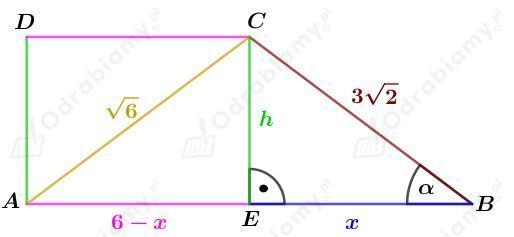
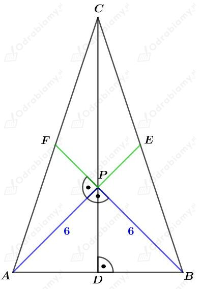
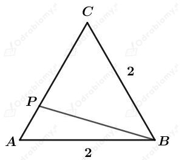
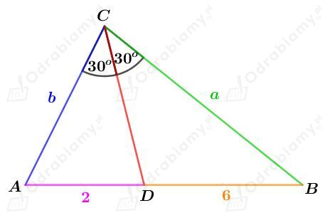
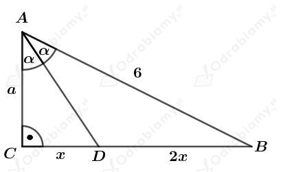
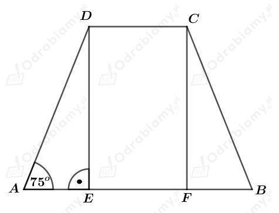
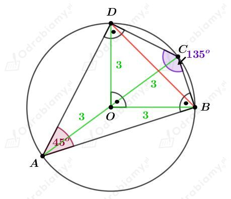
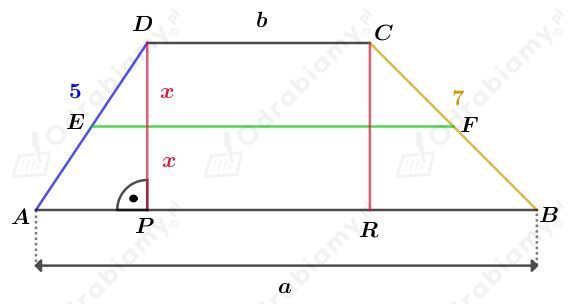
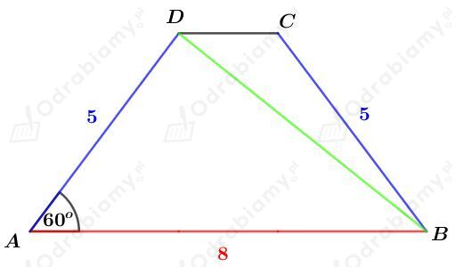
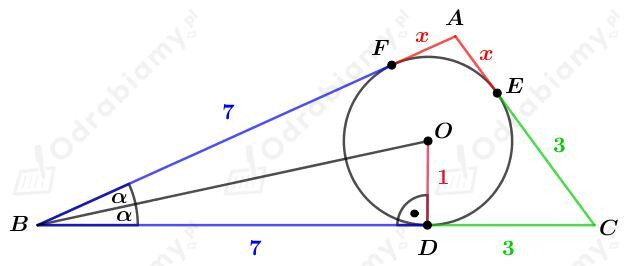

Rysunek:

Korzystając z twierdzenia Pitagorasa dla trójkąta EBC otrzymujemy:
Korzystając z twierdzenia Pitagorasa dla trójkąta AEC otrzymujemy:
czyli
Rozważmy trójkąt EBC. Wyznaczmy sinus kąta 𝛼. Mamy:
Wyznaczmy obwód tego trapezu. Mamy:
Rysunek:

Punkty D, E, F są środkami - odpowiednio - boków AB, BC i AC tego trójkąta.
Punkt P jest punktem przecięcia środkowych tego trójkąta.
Środkowe dowolnego trójkąta przecinają się w stosunku 2:1 licząc od wierzchołka, więc
Trójkąt ABP jest prostokątnym trójkątem równoramiennym, więc
Korzystając z twierdzenia Pitagorasa dla trójkąta APF mamy:
czyli
Wyznaczmy długość wysokości CD tego trójkąta. Korzystając z twierdzenia Pitagorasa dla trójkąta DBC mamy:
Wyznaczmy pole trójkąta ABC. Mamy:
Niech R będzie długością promienia okręgu opisanego na trójkącie ABC.
Korzystając ze wzoru na pole trójkąta
mamy:
Dany jest trójkąt równoboczny o obwodzie 6, zatem boki tego trójkąta mają długości 2.
Rysunek:

Wiedząc, że
otrzymujemy
Korzystając z twierdzenia cosinusów dla trójkąta ABP mamy:
Wyznaczmy pole trójkąta ABP. Mamy:
Niech R będzie długością promienia koła opisanego na trójkącie ABP. Pole tego trójkąta możemy zapisać również jako:
Porównując otrzymane pola mamy:
Wyznaczmy pole tego koła. Mamy:
Rysunek:

Korzystając z twierdzenia o dwusiecznej kąta w trójkącie otrzymujemy:
Korzystając z twierdzenia cosinusów dla trójkąta ABC otrzymujemy:
więc
Podsumowując, otrzymaliśmy:
Rysunek:

Korzystając z twierdzenia o dwusiecznej kąta trójkąta otrzymujemy:
Korzystając z twierdzenia Pitagorasa dla trójkąta ABC mamy:
Korzystając z twierdzenia Pitagorasa dla trójkąta ACD mamy:
Wyznaczmy obwód trójkąta ACD. Mamy:
Wyznaczmy obwód trójkąta ABD. Mamy:
Rysunek:

Podany trapez opisany jest na kole o promieniu długości 2, czyli
Rozważmy trójkąt prostokątny AED. Korzystając z funkcji sinus otrzymujemy:
Korzystając ze wzoru na sinus sumy kątów otrzymujemy:
Podany trapez opisany jest na okręgu, więc
Obliczmy pole tego trapezu. Mamy:
Rysunek:

Objaśnienia do rysunku:
Przekątna AC czworokąta ABCD jest średnicą tego okręgu, więc trójkąty ACD i ABC są prostokątne.
Odcinki DO i OB są promieniami okręgów opisanych na trójkątach ACD i ABC odpowiednio, więc |DO|=3 oraz |OB|=3.
Czworokąt ABCD wpisany jest w okrąg, więc skoro |∢DCB|=135o, to |∢DAC|=45o.
Wiedząc, że |∢DAB|=45o i kąt ten jest kątem wpisanym opartym na łuku DB, mamy również |∢DOB|=90o, ponieważ jest to kąt środkowy oparty na tym samym łuku.
Trójkąt DOB jest trójkątem prostokątnym równoramiennym, więc
Rysunek:

Trapez ten można opisać na okręgu, więc
czyli
Zapiszmy pole trapezu ABCD. Mamy:
Odcinek EF podzielił trapez na dwa trapezy EFCD i ABFE, których pola są w stosunku 1:2.
Mamy stąd:
Mamy również:
Odp. Podstawy tego trapezu mają długości 2 i 10.
Dany jest trapez na którym można opisać okrąg. Trapez ten jest zatem trapezem równoramiennym.
Rysunek:

Korzystając z twierdzenia cosinusów dla trójkąta ABD otrzymujemy:
Niech R będzie długością promienia okręgu opisanego na tym trapezie. Okrąg opisany na tym trapezie jest również okręgiem opisanym na trójkącie ABD.
Korzystając z twierdzenia sinusów dla trójkąta ABD otrzymujemy:
Rysunek:

Korzystając z twierdzenia Pitagorasa dla trójkąta BDO mamy:
Rozważmy trójkąt prostokątny BDO. Wyznaczmy sinus i cosinus kąta 𝛼. Mamy:
oraz
Wyznaczmy sinus kąta CBA. Korzystając ze wzoru na sinus podwojonego kąta mamy:
Wyznaczmy pole trójkąta ABC. Mamy:
Pole trójkąta ABC możemy też zapisać jako:
Porównując otrzymane pola mamy:
Wyznaczmy długość boku AB oraz AC mamy:
oraz